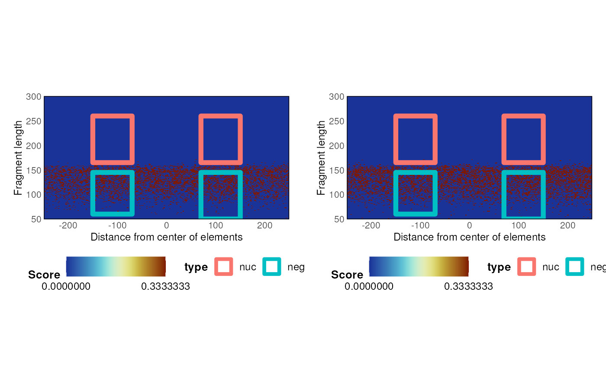

R/nucleosome_enrichment.R
nucleosomeEnrichment.Vmat.RdA function to compute nucleosome enrichment over a Vmat
# S3 method for Vmat
nucleosomeEnrichment(x, background, plus1_nuc_only = FALSE, ...)a computed Vmat. Should be un-normalized.
a background Vmat. Should be un-normalized.
Boolean, should compute nucleosome enrichment only for +1 nucleosome?
additional parameters
list
data(bam_test)
data(ce11_proms)
V <- plotVmat(
bam_test,
ce11_proms,
normFun = '',
return_Vmat = TRUE
)
#> Computing V-mat
#> Normalizing the matrix
#> No normalization applied
#> Smoothing the matrix
V_bg <- plotVmat(
bam_test,
sampleGRanges(ce11_proms),
normFun = '',
return_Vmat = TRUE
)
#> Computing V-mat
#> Normalizing the matrix
#> No normalization applied
#> Smoothing the matrix
n <- nucleosomeEnrichment(V, V_bg)
#> Warning: 'x' has been rounded to integer: Mean relative difference: 0.0002339911
n$fisher_test
#>
#> Fisher's Exact Test for Count Data
#>
#> data: matrix(vec, ncol = 2)
#> p-value = 0.819
#> alternative hypothesis: true odds ratio is not equal to 1
#> 95 percent confidence interval:
#> 0.2890289 2.2692102
#> sample estimates:
#> odds ratio
#> 0.8294851
#>
n$plot
